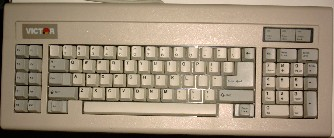
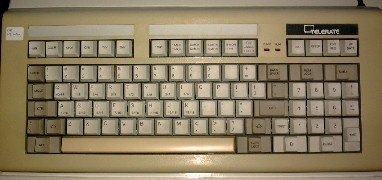

First keyboards with an XT interface. There is no keyboard controller, no commands to the keyboard. On a modern computer these will usually yield "keyboard error" or "KB/interface error" or some such, but sometimes they can be used nevertheless.
The IBM PC (all models) and the IBM XT (models 68, 78, 86, 87, 88, 267, 277) came with this 83-key keyboard. The IBM AT (models 68, 99, 239, 319) came with an 84-key keyboard. The IBM XT (models 89, 268, 278, 286) and the IBM AT model 339 came with a 101-key keyboard.
The original IBM 83-key PC/XT keyboard did not have LEDs. The original IBM 84-key AT keyboard has LEDs, separates the keypad from the main area, moves the Esc key to the right, and adds the SysReq key. The original IBM 101-key keyboard moves the ten function keys from the left to the top row and adds two more. The Esc key is moved in front of this row of function keys. The "number" and "cursor" functions of the keypad are separated. There are duplicate Ctrl and Alt keys.
The XT keyboard has 83 keys, nicely numbered 1-83, that is, with scancodes 01-53. No escaped scancodes.

This Victor keyboard is very similar. The keypad is separated here, and the Esc key has been moved to the keypad. The frontside of the ScrollLock key says Break. It resembles an AT keyboard but has only 83 keys, the SysRq is still missing.

The Olivetti M24 (also sold under the names Logabax 1600 and ATT PC-6300) was an IBM compatible manufactured in 1984.
John Elliott writes: The Olivetti M24 is an XT sort-of clone. It has two possible keyboards - the normal (83-key) IBM one, and a "deluxe" one (102 keys) with 18 function keys.
Unlike a normal XT keyboard, it is possible to send commands to it. The BIOS does this twice: (1) Command 01h makes the keyboard perform a self-test. (2) Command 05h makes the keyboard return a 1-byte ID. The least signficant bit is set for a "deluxe" layout.
The keyboard connector is DE-9 rather than DIN. Pins are:
1 KBDATA 2 KBCLOCK 3 GND 4 GND 5 +12V 6 -RESET1 7 Keyboard/-Typewriter 8 TEST0 9 +5V(pins 6-9 are not used by the supplied keyboards).
Attached the diagram of the 'deluxe' keyboard, which shows its scancodes in decimal.
A mouse can be attached to the keyboard. The following is based on disassembling attmouse.drv from Windows 1.0.
Windows initialises the mouse by sending the following bytes to the keyboard: 0x12, 0x77, 0x78, 0x79, 0x00. The 0x12 is almost certainly a command byte; 0x77, 0x78 and 0x79 are the scancodes to be returned by the three mouse buttons. I don't know what the 0x00 is for.
It then handles the following scancodes: 0xFE -- mouse movement. The next two scancodes are delta X, then delta Y, in ones' complement. 0x77, 0x78, 0x79 (and 0xF7, 0xF8, 0xF9) -- button presses / releases.
When shutting down the mouse, it sends these bytes to the keyboard: 0x11, 0x1C, 0x53, 0x01, 0x4B, 0x4D, 0x48, 0x50, 0x02, 0x04. My guesses here are: 0x11: Mouse movement becomes simulated keypresses. 0x1C, 0x53, 0x01: Scancodes to be returned by mouse button presses. 0x4B, 0x4D, 0x48, 0x50: Scancodes to be returned by mouse movement. 0x02, 0x04: Don't know.
The Telerate keyboard was used for financial applications, as is clear from the keycaps. This keyboard (in the old XT version, without e0 prefixes) has four additional keys, with scancodes 61, 62, 63, 64. The F11 and F12 keys have scancodes 54 and 55 (instead of the common 57 and 58). There are two LEDs (for CapsLock and NumLock).
Also with an XT interface this NCR keyboard, still with ten function keys on the left, but already with a separate block of keys between the ordinary keys and the numeric keypad. This middle block has on top five keys Ctrl (1d, same as the Ctrl on the left), Del (53, same as Keypad-Del/.), PgUp (49, same as Keypad-9/PgUp), End (4f, same as Keypad-1/End), PgDn (51, same as Keypad-3/PgDn), and below five cursor keys (48, same as Keypad-8/Up; 4b, same as Keypad-4/Left; 47, same as Keypad-7/Home; 4d, same as Keypad-6/Right; 50, same as Keypad-2/Down). Enter and Keypad-enter are both 1c. Below the Enter key PrtScn/* (37), and below that again Ins (52, same as Keypad-0/Ins). CapsLock and NumLock have a built-in LED.

According to FreeKEYB/kbdinfo.html this keyboard has five additional keys with scancodes 55 (F11), 56 (F12), 57 (F13), 58 (F14), 59 (F15).
{kind=link}
{kind=link}
{kind=link}
{kind=link}
{kind=link}